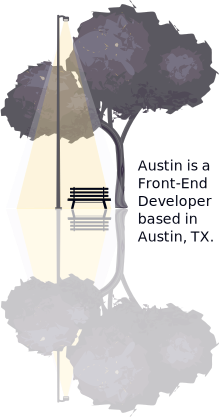
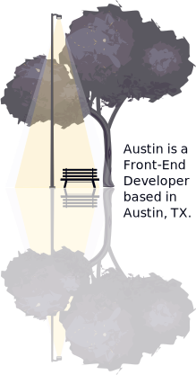

Austin is a Front-End Developer based in Austin, TX.
Before breaking into the tech industry, Austin was an award-winning classical composer.
Then he got the coding bug.
Now he brings a creativity and precision that only a composer can to the world of web development.